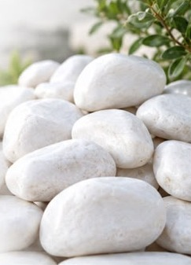
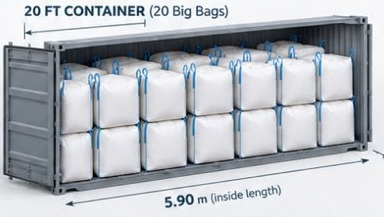

1 / 4Tamburlanmış Peyzaj Taşları
Tamburlanmış Dolomit
Doğal · Dayanıklı · ZamansızPürüzsüz, yuvarlatılmış yüzeyli birinci kalite beyaz doğal taş. Peyzaj, bahçe tasarımı ve dekoratif uygulamalar için temiz, şık bir görünüm ve uzun ömürlü kullanım sunar.
Ebat seçenekleri · Seçili: —
- Ebat3–5 · 5–10 · 10–15 cm
- AmbalajBig bag, 1.200–1.300 kg
- TeslimFOB Ambarlı
Fiyat için teklif isteyin
Miktar, ebat ve teslim yerine göre
%100 DoğalÖzgün, yüksek kaliteli doğal malzeme.
Tamburlanmış yüzeyPürüzsüz, yuvarlak kenarlar.
DayanıklıHava koşullarına dayanıklı, uzun ömürlü.
Çok amaçlıPeyzaj, bahçe, mimari ve dekoratif kullanım.
Teknik
Ürün bilgileri
- Ürün grubu
- Dolomit, Kalsit, Mermer
- Malzeme
- Doğal dolomit
- Renk
- Beyaz
- Yüzey
- Tamburlanmış (yuvarlatılmış, pürüzsüz)
- Ambalaj
- Big bag, 1.200–1.300 kg
- 20 ft konteyner
- 20 big bag ≈ 24–26 ton
- 40 ft konteyner
- 40 big bag ≈ 48–52 ton
- Teslim şekli
- FOB Ambarlı
Paketleme & yükleme
1 Big Bag · 1.200–1.300 kg (ortalama) 20 ft konteyner · 20 big bag · İç ölçü 5,90 × 2,35 × 2,35 m
Big bag ve konteyner kapasitesi

Yükleme hesapla
Bu yükleme için teklif iste
Big bag20
Yaklaşık ağırlık24–26 t
Teklif
Teklif isteyin
Ürün ve ebat seçiminiz forma eklenir. Miktarı ve teslim yerini yazın, size dönelim.
- +90 212 360 11 15
- +90 212 360 20 44
- +90 212 360 07 61
- Mithatpaşa Mah. Selanik Bulvarı, Uzun Kemer Mevkii, Kemerburgaz – Eyüpsultan / İstanbul